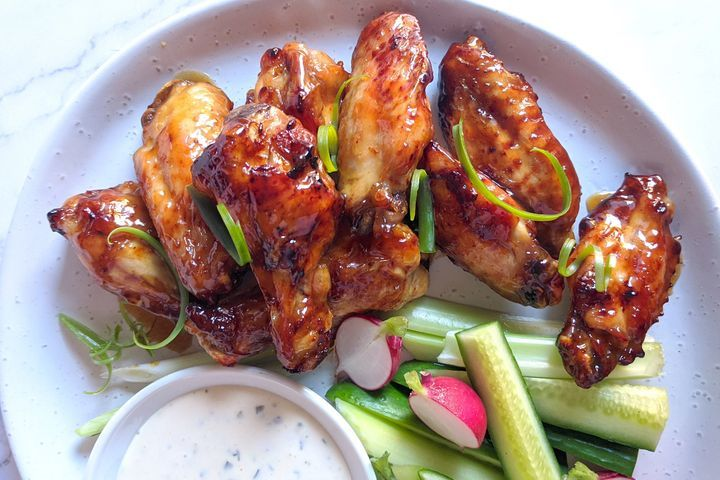

Chicken Wings

Description
These delisous thai sticky chicken wings, can made made in your easy cook home airfryer, creating a would of delight for your midnight snack or even your last minute dinner party
cooked with easy to find ingredients, this should be the go to "what do i make for dinner tonight" dish. Coupled with a side of vegstables, so you dont have to feel guilty about trying just one more wing.
Ingredients
- 125ml (1/2 cup) bourbon
- 125ml (1/2 cup)maple syrup
- 1 tbsp hot chilli sauce
- 1.5 kg chicken wings nibbles
- Ranch dressing to serve
- Sliced raw vegetables, to serve
Steps
- the bourbon, maple syrup and chilli sauce in a large bowl. Add the chicken. Toss to coat. Cover and place in the fridge for 3 hours.
- a 7-litre air fryer to 180C. Place chicken, in a single layer, in the basket, reserving marinade. Cook, turning chicken, for 35 minutes or until golden and cooked through.
- strain marinade into a medium frying pan. Bring to the boil over high heat and cook for 5 minutes or until sauce thickens and reduces. Pour sauce into a large heatproof bowl.
- Add the chicken to the sauce and toss to coat. Serve with ranch sauce and vegetables.